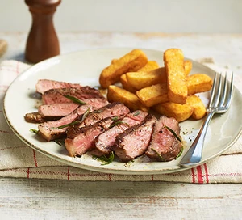

Steak

Description
Simple yet delicious, a perfectly cooked steak is one of life's true food pleasures. Cooking a steak to your preferred temperature can be a little tricky at first, but after a few attempts you'll begin to pick it up, and soon you'll be a steak master.
Ingredients
- 2 sirloin steaks, each about 200g and 2cm thick
- 1 tbsp sunflower oil
- 1 tbsp butter
- 1 garlic clove, left whole but bashed once
- sprig of rosemary or thyme
Instructions
- Remove the steaks from the fridge about 30 mins before you plan to cook, so they’re closer to room temperature. Pat the steaks dry with kitchen paper, and season with salt and pepper. Take a heavy-based frying pan that will comfortably fit both steaks, add the oil and heat over a high flame.
- When the oil is shimmering, turn the heat down to medium-high and add the butter. Once it’s sizzling, carefully lay the steaks in the pan, tucking the garlic and herbs in at the sides.
- With a pair of tongs, sear and turn the steaks every 30 secs to 1 min so they get a nice brown crust. As a rough guide, each steak will take 3 mins in total for rare, 4-5 mins in total for medium and 7-8 mins for well done. If you have a digital cooking thermometer, the middle of the steak should be 50C for rare, 60C for medium and 70C for well done.